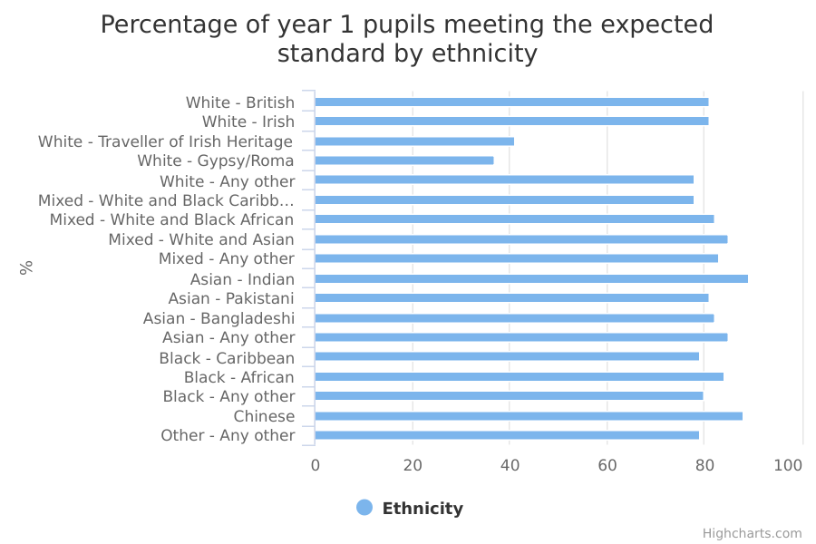
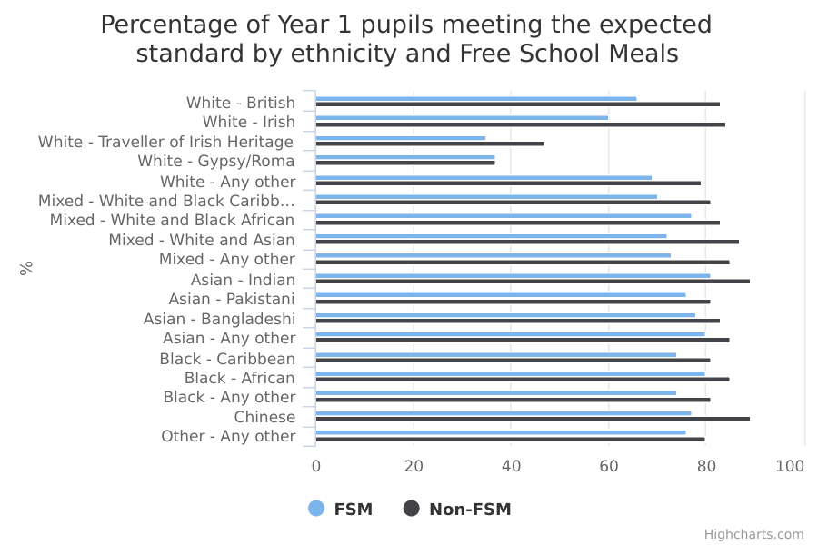
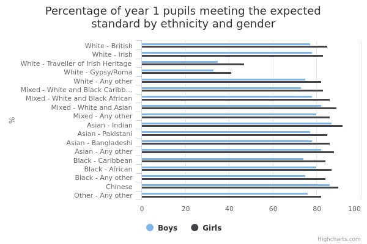

Phonics attainments for children aged 5 to 7 (key stage 1)
The main facts and figures show that:
-
in 2015/16, there were 652,250 pupils at the end of year 1, of which ethnicity was known for 643,163 (99%)
-
76% were White, 10% were Asian, 6% were Black, 6% were Mixed, 2% were from the any Other ethnic group and 0.5% were Chinese
The data for expected standards in phonics shows that:
-
81% of all pupils met the phonics expected standard at the end of year 1 (ages 5 to 6)
-
in every ethnic group, girls did better than boys
-
Indian boys and girls were most likely to meet the expected standard, at 86% and 92% respectively
-
Gypsy/Roma boys and girls were the group least likely to meet the expected standard, at 33% and 41% respectively
-
91% of all pupils had met the expected standard by the end of year 2 (ages 6 to 7)
Things you need to know
Results are presented for the academic year 2015/16. The data includes pupils in year 1 in 2015/16 who took and passed the phonics test. It also includes pupils in year 2 in 2015/16 who were retaking the test because they were missed, or had failed it, in year 1.
Results for the Isles of Scilly and the City of London, which have only one school each, have been excluded from local authority breakdowns. This is because the very small number of pupils in these local authorities make the results unreliable.
In the published ‘statistical first release’ (SFR) for phonics attainments, key stage 1, the Department of Education (DfE) has ‘suppressed’ very small numbers (for example, values of 1 or 2, a percentage based on 1 or 2 pupils who achieved, or 0, 1 or 2 pupils who did not achieve a particular level).
This is because, where the size of the ethnic group population is small enough that an individual’s identity could come to light, information is excluded, or 'suppressed', to preserve confidentiality. This is consistent with DfE’s statistical policy statement on confidentiality .
What the data measures
This data measures the percentage of pupils who met the phonics expected standard at the end of year 1 and the end of year 2 in key stage 1 (when children are aged 5 to 7). The data covers the academic year 2015/16 (September 2015 to July 2016).
The phonics approach helps children to learn to read by teaching them the sounds made by letters in the English language. They can then combine these sounds into words, for both reading and writing.
All pupils in state-funded schools take the phonics screening test at the end of year 1 to see if they’ve reached the expected standard. Pupils who don’t meet the standard, or who weren’t checked, take the test again at the end of year 2.
The test consists of 20 real words and 20 made-up words that pupils read out loud to a teacher.
Why these ethnic categories were chosen
This data uses categories from the Department of Education’s school census, which is broadly based on the 2001 national census, with two exceptions:
- Traveller of Irish Heritage and Gypsy/Roma children have been separated into two categories
- Sri Lankan has been added to the Asian/Asian British group
These small changes were made after consultations with local authorities and lobby groups.
The categories are:
White:
- White British
- White Irish
- Traveller of Irish Heritage
- Gypsy/Roma
- Other White
Mixed/Multiple ethnic groups:
- White and Black Caribbean
- White and Black African
- White and Asian
- Other Mixed background
Asian/Asian British:
- Indian
- Pakistani
- Bangladeshi
- Sri Lankan
- Other Asian Background
Black/African/Caribbean/Black British:
- Black African
- Black Caribbean
- Other Black background
Other ethnic group:
- Chinese
- Other Background
Information about phonics attainments is provided for both detailed and broad ethnic groups categories, with the exception of local authority data. Here, it is only provided for the 5 broad ethnic groups, to preserve confidentiality and ensure individuals cannot be identified.
Here, the school census replaces ‘Other ethnic group’ with ‘Chinese’, again after consultations with local authorities and lobby groups.
The 5 broad categories are as follows:
- White
- Mixed/Multiple ethnic groups
- Asian/Asian British
- Black/African/Caribbean/Black British
- Chinese
Phonics attainments for children aged 5 to 7 by ethnicity

View the numbers in a table
| All | 81 | 91 |
|---|---|---|
| Asian | 84 | 93 |
| Asian - Any other | 85 | 93 |
| Asian - Bangladeshi | 82 | 92 |
| Asian - Indian | 89 | 95 |
| Asian - Pakistani | 81 | 92 |
| Black | 82 | 91 |
| Black - African | 84 | 92 |
| Black - Any other | 80 | 89 |
| Black - Caribbean | 79 | 90 |
| Chinese | 88 | 94 |
| Mixed | 82 | 92 |
| Mixed - Any other | 83 | 92 |
| Mixed - White and Asian | 85 | 94 |
| Mixed - White and Black African | 82 | 92 |
| Mixed - White and Black Caribbean | 78 | 90 |
| Other - Any other | 79 | 89 |
| Unclassified | 58 | 73 |
| White | 80 | 91 |
| White - Any other | 78 | 89 |
| White - British | 81 | 92 |
| White - Gypsy/Roma | 37 | 60 |
| White - Irish | 81 | 91 |
| White - Traveller of Irish Heritage | 41 | 60 |
Summary
The data shows that:
-
81% of all pupils in England met the expected standard at the end of year 1 (aged 5 to 6), and 91% by the end of year 2 (aged 6 to 7)
-
Indian pupils were most likely to meet the expected standard both at the end of year 1 and at the end of year 2 – 89% and 95% did so in each year respectively
-
Gypsy/Roma pupils were least likely to meet the expected standard at the end of year 1 – 37% did so
-
Traveller of Irish Heritage pupils were least likely to meet the expected standard at the end of year 2 – 60% did so
Download image and data
Phonics attainments for children aged 5 to 7 by ethnicity and free school meals (FSM)

View the numbers in a table
| FSM | Non-FSM | |
| All | 69 | 83 |
|---|---|---|
| White | 66 | 82 |
| White - British | 66 | 83 |
| White - Irish | 60 | 84 |
| White - Traveller of Irish Heritage | 35 | 47 |
| White - Gypsy/Roma | 37 | 37 |
| White - Any other | 69 | 79 |
| Mixed | 73 | 85 |
| Mixed - White and Black Caribbean | 70 | 81 |
| Mixed - White and Black African | 77 | 83 |
| Mixed - White and Asian | 72 | 87 |
| Mixed - Any other | 73 | 85 |
| Asian | 78 | 85 |
| Asian - Indian | 81 | 89 |
| Asian - Pakistani | 76 | 81 |
| Asian - Bangladeshi | 78 | 83 |
| Asian - Any other | 80 | 85 |
| Black | 78 | 84 |
| Black - Caribbean | 74 | 81 |
| Black - African | 80 | 85 |
| Black - Any other | 74 | 81 |
| Chinese | 77 | 89 |
| Other - Any other | 76 | 80 |
Summary
Eligibility for FSM is used as an indicator of deprivation by the Department of Education. For more about who qualifies for FSM, see Methodology.
The data shows that:
-
across all ethnic groups, FSM-eligible pupils were less likely to meet the expected standard than other pupils
-
69% of FSM-eligible pupils met the expected standard, compared to 83% not eligible (a gap of 14 percentage points)
-
among all FSM-eligible pupils, Indian children were most likely to meet the expected standard – 81% did so
-
FSM-eligible pupils from a Traveller of Irish Heritage Background were least likely to meet the expected standard (35%)
-
the biggest gap in attainment, at 24 percentage points, was found among Irish pupils, where 60% of FSM-eligible pupils met the expected standard compared to 84% of those not eligible
-
looking at White British children, the attainment gap between pupils eligible for FSM and those not eligible was 83% and 66% respectively (a gap of 17 percentage points)
-
looking at Gypsy/Roma pupils, there was no difference in attainment between those eligible for FSM and those not eligible (both at 37%)
Download image and data
Phonics attainments for children aged 5 to 7 by ethnicity and area

| White | Mixed | Asian | Black | Chinese | All | |
| County Durham | 82 | 77 | 83 | 0 | 0 | 82 |
|---|---|---|---|---|---|---|
| Darlington | 86 | 0 | 76 | 100 | 100 | 86 |
| Gateshead | 80 | 87 | 74 | 75 | 0 | 80 |
| Hartlepool | 85 | 73 | 0 | 100 | 100 | 85 |
| Middlesbrough | 74 | 72 | 81 | 88 | 0 | 74 |
| Newcastle upon Tyne | 81 | 86 | 82 | 88 | 78 | 81 |
| North Tyneside | 81 | 92 | 71 | 73 | 77 | 81 |
| Northumberland | 84 | 87 | 0 | 0 | 0 | 84 |
| Redcar and Cleveland | 82 | 89 | 0 | 0 | 0 | 82 |
| South Tyneside | 81 | 91 | 84 | 0 | 0 | 81 |
| Stockton-on-Tees | 84 | 77 | 84 | 89 | 0 | 83 |
| Sunderland | 81 | 88 | 77 | 86 | 0 | 81 |
| Blackburn with Darwen | 77 | 94 | 86 | 67 | 0 | 81 |
| Blackpool | 80 | 91 | 80 | 0 | 100 | 80 |
| Bolton | 79 | 85 | 87 | 77 | 100 | 80 |
| Bury | 83 | 86 | 79 | 84 | 100 | 82 |
| Cheshire East | 83 | 84 | 89 | 0 | 100 | 82 |
| Cheshire West and Chester | 80 | 83 | 78 | 0 | 67 | 79 |
| Cumbria | 77 | 76 | 73 | 0 | 0 | 77 |
| Halton | 76 | 76 | 0 | 0 | 0 | 76 |
| Knowsley | 78 | 66 | 0 | 67 | 100 | 78 |
| Lancashire | 81 | 82 | 79 | 83 | 86 | 81 |
| Liverpool | 76 | 76 | 74 | 79 | 82 | 75 |
| Manchester | 78 | 79 | 80 | 84 | 90 | 78 |
| Oldham | 78 | 82 | 76 | 69 | 0 | 76 |
| Rochdale | 83 | 86 | 82 | 84 | 100 | 82 |
| Salford | 79 | 85 | 84 | 83 | 100 | 79 |
| Sefton | 78 | 78 | 86 | 77 | 0 | 78 |
| St. Helens | 79 | 80 | 0 | 0 | 76 | 78 |
| Stockport | 82 | 81 | 79 | 79 | 83 | 82 |
| Tameside | 77 | 78 | 82 | 74 | 79 | 77 |
| Trafford | 87 | 81 | 82 | 77 | 93 | 85 |
| Warrington | 83 | 89 | 93 | 0 | 0 | 83 |
| Wigan | 83 | 91 | 79 | 77 | 77 | 83 |
| Wirral | 80 | 82 | 77 | 0 | 75 | 80 |
| Barnsley | 79 | 80 | 0 | 85 | 0 | 79 |
| Bradford | 78 | 76 | 82 | 82 | 0 | 79 |
| Calderdale | 82 | 81 | 82 | 0 | 0 | 82 |
| Doncaster | 77 | 78 | 81 | 88 | 0 | 78 |
| East Riding of Yorkshire | 81 | 86 | 88 | 0 | 0 | 81 |
| Kingston upon Hull, City of | 77 | 81 | 80 | 68 | 100 | 77 |
| Kirklees | 78 | 78 | 80 | 73 | 0 | 78 |
| Leeds | 77 | 75 | 79 | 75 | 86 | 77 |
| North East Lincolnshire | 79 | 87 | 0 | 100 | 100 | 80 |
| North Lincolnshire | 83 | 82 | 86 | 69 | 0 | 83 |
| North Yorkshire | 78 | 83 | 78 | 74 | 100 | 78 |
| Rotherham | 79 | 81 | 81 | 82 | 81 | 79 |
| Sheffield | 78 | 78 | 78 | 77 | 81 | 77 |
| Wakefield | 76 | 85 | 83 | 79 | 83 | 77 |
| York | 82 | 86 | 86 | 0 | 63 | 82 |
| Derby | 78 | 75 | 84 | 84 | 81 | 78 |
| Derbyshire | 79 | 80 | 84 | 86 | 80 | 79 |
| Leicester | 71 | 79 | 83 | 80 | 69 | 77 |
| Leicestershire | 80 | 81 | 86 | 90 | 85 | 80 |
| Lincolnshire | 83 | 83 | 90 | 0 | 0 | 83 |
| Northamptonshire | 81 | 83 | 83 | 83 | 87 | 81 |
| Nottingham | 74 | 78 | 80 | 80 | 84 | 75 |
| Nottinghamshire | 77 | 81 | 84 | 80 | 80 | 77 |
| Rutland | 85 | 0 | 0 | 100 | 0 | 86 |
| Birmingham | 78 | 81 | 82 | 81 | 89 | 79 |
| Coventry | 77 | 80 | 83 | 85 | 0 | 79 |
| Dudley | 79 | 78 | 82 | 78 | 0 | 79 |
| Herefordshire, County of | 81 | 84 | 0 | 0 | 0 | 81 |
| Sandwell | 78 | 79 | 83 | 80 | 0 | 79 |
| Shropshire | 81 | 85 | 0 | 0 | 0 | 81 |
| Solihull | 83 | 84 | 90 | 78 | 0 | 84 |
| Staffordshire | 83 | 85 | 91 | 85 | 87 | 83 |
| Stoke-on-Trent | 80 | 83 | 84 | 74 | 82 | 80 |
| Telford and Wrekin | 84 | 87 | 86 | 93 | 0 | 84 |
| Walsall | 82 | 83 | 87 | 84 | 0 | 82 |
| Warwickshire | 82 | 81 | 85 | 94 | 0 | 82 |
| Wolverhampton | 77 | 79 | 86 | 80 | 0 | 79 |
| Worcestershire | 81 | 85 | 80 | 76 | 0 | 81 |
| Bedford | 75 | 73 | 79 | 76 | 0 | 75 |
| Cambridgeshire | 78 | 80 | 81 | 78 | 89 | 78 |
| Central Bedfordshire | 80 | 86 | 90 | 90 | 100 | 81 |
| Essex | 81 | 83 | 91 | 86 | 88 | 81 |
| Hertfordshire | 82 | 84 | 87 | 80 | 0 | 83 |
| Luton | 77 | 76 | 81 | 82 | 75 | 78 |
| Norfolk | 78 | 76 | 84 | 79 | 90 | 78 |
| Peterborough | 75 | 79 | 82 | 77 | 0 | 77 |
| Southend-on-Sea | 80 | 80 | 84 | 83 | 0 | 80 |
| Suffolk | 79 | 78 | 86 | 85 | 0 | 79 |
| Thurrock | 81 | 85 | 92 | 90 | 0 | 83 |
| Camden | 80 | 83 | 81 | 81 | 0 | 80 |
| City of London | 0 | 0 | 0 | 0 | 0 | 0 |
| Hackney | 86 | 85 | 89 | 84 | 87 | 85 |
| Hammersmith and Fulham | 86 | 86 | 91 | 83 | 100 | 85 |
| Haringey | 82 | 88 | 84 | 83 | 80 | 82 |
| Islington | 81 | 81 | 75 | 79 | 100 | 80 |
| Kensington and Chelsea | 88 | 85 | 81 | 87 | 0 | 87 |
| Lambeth | 85 | 85 | 88 | 83 | 86 | 84 |
| Lewisham | 84 | 83 | 86 | 83 | 86 | 83 |
| Newham | 84 | 89 | 90 | 88 | 88 | 87 |
| Southwark | 84 | 84 | 84 | 83 | 84 | 82 |
| Tower Hamlets | 77 | 79 | 83 | 79 | 0 | 81 |
| Wandsworth | 87 | 83 | 88 | 82 | 84 | 85 |
| Westminster | 88 | 88 | 90 | 89 | 0 | 88 |
| Barking and Dagenham | 77 | 79 | 87 | 84 | 0 | 81 |
| Barnet | 83 | 83 | 84 | 81 | 92 | 81 |
| Bexley | 82 | 84 | 92 | 90 | 93 | 85 |
| Brent | 83 | 83 | 84 | 81 | 0 | 82 |
| Bromley | 85 | 86 | 92 | 87 | 86 | 86 |
| Croydon | 78 | 80 | 86 | 79 | 0 | 79 |
| Ealing | 84 | 84 | 85 | 76 | 0 | 82 |
| Enfield | 76 | 82 | 91 | 79 | 0 | 79 |
| Greenwich | 82 | 89 | 86 | 87 | 92 | 84 |
| Harrow | 79 | 88 | 88 | 82 | 100 | 84 |
| Havering | 84 | 86 | 89 | 85 | 100 | 85 |
| Hillingdon | 79 | 86 | 88 | 85 | 0 | 83 |
| Hounslow | 83 | 86 | 88 | 80 | 0 | 84 |
| Kingston upon Thames | 87 | 85 | 90 | 87 | 0 | 87 |
| Merton | 78 | 81 | 84 | 83 | 85 | 80 |
| Redbridge | 75 | 79 | 86 | 79 | 86 | 80 |
| Richmond upon Thames | 89 | 90 | 93 | 86 | 90 | 89 |
| Sutton | 81 | 82 | 89 | 85 | 0 | 82 |
| Waltham Forest | 82 | 84 | 86 | 85 | 80 | 83 |
| Bracknell Forest | 83 | 86 | 92 | 93 | 0 | 84 |
| Brighton and Hove | 80 | 81 | 81 | 83 | 81 | 79 |
| Buckinghamshire | 82 | 81 | 77 | 76 | 0 | 81 |
| East Sussex | 81 | 82 | 85 | 78 | 0 | 81 |
| Hampshire | 81 | 87 | 85 | 81 | 85 | 81 |
| Isle of Wight | 76 | 80 | 0 | 0 | 0 | 76 |
| Kent | 81 | 86 | 88 | 89 | 93 | 82 |
| Medway | 81 | 88 | 88 | 89 | 0 | 82 |
| Milton Keynes | 78 | 85 | 87 | 85 | 81 | 81 |
| Oxfordshire | 80 | 81 | 80 | 83 | 0 | 80 |
| Portsmouth | 81 | 87 | 84 | 83 | 0 | 81 |
| Reading | 77 | 80 | 84 | 84 | 100 | 79 |
| Slough | 75 | 78 | 87 | 80 | 0 | 81 |
| Southampton | 81 | 85 | 85 | 83 | 100 | 82 |
| Surrey | 82 | 86 | 86 | 84 | 84 | 82 |
| West Berkshire | 80 | 78 | 92 | 0 | 100 | 80 |
| West Sussex | 77 | 79 | 78 | 74 | 100 | 77 |
| Windsor and Maidenhead | 80 | 83 | 85 | 75 | 0 | 81 |
| Wokingham | 82 | 84 | 91 | 78 | 100 | 83 |
| Bath and North East Somerset | 79 | 80 | 77 | 80 | 77 | 79 |
| Bournemouth | 80 | 87 | 88 | 0 | 0 | 81 |
| Bristol, City of | 80 | 76 | 78 | 73 | 79 | 78 |
| Cornwall | 80 | 81 | 73 | 0 | 73 | 80 |
| Devon | 82 | 81 | 86 | 0 | 0 | 82 |
| Dorset | 80 | 80 | 89 | 0 | 0 | 80 |
| Gloucestershire | 80 | 82 | 88 | 77 | 83 | 80 |
| Isles of Scilly | 0 | 0 | 0 | 0 | 0 | 0 |
| North Somerset | 83 | 80 | 84 | 0 | 63 | 83 |
| Plymouth | 80 | 82 | 83 | 81 | 77 | 80 |
| Poole | 83 | 81 | 91 | 0 | 0 | 83 |
| Somerset | 79 | 75 | 75 | 0 | 67 | 78 |
| South Gloucestershire | 81 | 82 | 90 | 82 | 0 | 81 |
| Swindon | 76 | 83 | 82 | 78 | 0 | 76 |
| Torbay | 81 | 88 | 75 | 0 | 100 | 81 |
| Wiltshire | 78 | 80 | 89 | 81 | 0 | 78 |
Summary
The data shows that:
-
pupils were most likely to meet the expected standard in Richmond upon Thames in London (89%)
-
pupils were least likely to meet the expected standard in Middlesbrough in the North East (74%)
-
White pupils were most likely to meet the expected standard in Richmond upon Thames in London (89%) and least likely in Leicester in the East Midlands (71%)
-
Asian pupils were most likely to meet the expected standard in Richmond upon Thames in London and Warrington in the North West (93% for both) and least likely to meet the expected standard in North Tyneside in the North East (71%)
-
Mixed race pupils were most likely to meet the expected standard in Blackburn with Darwen in the North West (94%) and least likely to meet the expected standard in Knowsley in the North West (66%)
-
100% of Black pupils met the expected standard in Darlington and Hartlepool in the North East, North East Lincolnshire in Yorkshire and The Humber and Rutland in the East Midlands
-
Black pupils were least likely to meet the expected standard in Knowsley and Blackburn with Darwen in the North West (67% for both)
-
100% of Chinese pupils met the expected standard in 23 out of 81 local authorities (28% of local authorities)
-
Chinese pupils were least likely to meet the expected standard in North Somerset in the South West and York in Yorkshire and The Humber (63% in both local authorities)
Download image and data
Phonics attainments for children aged 5 to 7 by ethnicity and gender

View the numbers in a table
| Boys | Girls | |||
| All | 77 | 89 | 84 | 93 |
|---|---|---|---|---|
| White | 77 | 89 | 84 | 94 |
| White - British | 77 | 90 | 85 | 94 |
| White - Irish | 78 | 89 | 83 | 93 |
| White - Traveller of Irish Heritage | 35 | 57 | 47 | 63 |
| White - Gypsy/Roma | 33 | 56 | 41 | 64 |
| White - Any other | 75 | 87 | 82 | 91 |
| Mixed | 78 | 90 | 86 | 94 |
| Mixed - White and Black Caribbean | 73 | 87 | 83 | 93 |
| Mixed - White and Black African | 78 | 91 | 86 | 94 |
| Mixed - White and Asian | 82 | 93 | 89 | 96 |
| Mixed - Any other | 80 | 90 | 86 | 94 |
| Asian | 81 | 91 | 87 | 95 |
| Asian - Indian | 87 | 94 | 92 | 96 |
| Asian - Pakistani | 77 | 90 | 85 | 94 |
| Asian - Bangladeshi | 78 | 90 | 86 | 94 |
| Asian - Any other | 82 | 91 | 88 | 95 |
| Black | 78 | 89 | 86 | 94 |
| Black - Caribbean | 74 | 88 | 84 | 93 |
| Black - African | 80 | 90 | 87 | 94 |
| Black - Any other | 75 | 87 | 84 | 92 |
| Chinese | 86 | 92 | 90 | 95 |
| Other - Any other | 76 | 88 | 82 | 91 |
| Unclassified | 55 | 70 | 61 | 76 |
Summary
The data for pupils at the end of year 1 (aged 5 to 6) shows that:
-
girls did better than boys in all ethnic groups
-
Indian girls (92%) and boys (87%) did the best at the end of year 1
-
the biggest gap between girls and boys was found in the Traveller of Irish Heritage ethnic group, where 47% of girls met the expected standard compared to 35% of boys
-
the smallest gap between girls and boys was found in the Chinese ethnic group, where 90% of girls met the expected standard compared to 86% of boys
The data for pupils at the end of year 2 (aged 6 to 7) shows that:
-
girls did better than boys across all ethnic groups: 93% of girls met the expected standard compared to 89% of boys
-
Mixed White and Asian and Indian girls were most likely to have met the expected standard by the end of year 2 – 96% of these groups had done so
-
Gypsy/Roma boys were least likely to have met the expected standard by the end of year 2 – 56% had done so
-
the biggest gap between boys and girls was found in the Gypsy/Roma ethnic group, where 64% of girls met the expected standard compared to 56% of boys
-
the smallest gap between boys and girls was found in the Indian ethnic group, where 96% of girls met the expected standard compared to 94% of boys
Download image and data
Phonics attainments for children aged 5 to 7 by ethnicity, gender and free school meals (FSM)

% of pupils from ethnic groups achieving the expected standard in phonics by free school meals and gender
| Boys all other | Boys eligible for free school meals | Girls all other | Girls eligible for free school meals | |
| All - England | 79 | 64 | 86 | 74 |
|---|---|---|---|---|
| Asian | 82 | 74 | 88 | 81 |
| Asian - Any other | 82 | 78 | 88 | 83 |
| Asian - Bangladeshi | 79 | 74 | 87 | 83 |
| Asian - Indian | 87 | 79 | 92 | 84 |
| Asian - Pakistani | 78 | 72 | 85 | 80 |
| Black | 80 | 73 | 87 | 82 |
| Black - African | 81 | 76 | 88 | 84 |
| Black - Any other | 77 | 69 | 86 | 78 |
| Black - Caribbean | 77 | 67 | 86 | 80 |
| Chinese | 88 | 71 | 90 | 86 |
| Mixed | 81 | 67 | 88 | 78 |
| Mixed - Any other | 82 | 69 | 88 | 77 |
| Mixed - White and Asian | 85 | 64 | 90 | 81 |
| Mixed - White and Black - African | 80 | 71 | 86 | 84 |
| Mixed - White and Black - Caribbean | 77 | 65 | 86 | 76 |
| Other - Any other | 77 | 74 | 83 | 78 |
| White | 79 | 60 | 86 | 71 |
| White - Any other | 75 | 65 | 82 | 74 |
| White - British | 80 | 60 | 87 | 72 |
| White - Gypsy or Irish Traveller | 40 | 30 | 53 | 41 |
| White - Gypsy/Roma | 33 | 31 | 40 | 44 |
| White - Irish | 82 | 57 | 86 | 62 |
Summary
Eligibility for FSM is used as an indicator of deprivation by the Department of Education. For more about who qualifies for FSM, see Methodology.
The data at the end of year 1 shows that:
-
overall, in every ethnic group, boys and girls not eligible for FSM did better than those who were eligible
-
within every ethnic group, girls eligible for FSM did better than boys eligible for FSM
-
overall, among FSM-eligible pupils, girls out-performed boys at the end of year 1: 74% of girls met the expected standard, compared to 64% of boys
-
30% of Travellers of Irish Heritage boys eligible for FSM met the expected standard (the lowest percentage of any FSM-eligible ethnic group)
-
86% of Chinese girls eligible for FSM met the expected standard (the highest percentage of any FSM-eligible ethnic group)
-
the biggest gap between boys and girls, at 17 percentage points, was found in the Mixed White and Asian group, where 81% of girls met the expected standard, compared to 64% of boys
-
looking at all pupils eligible for FSM, the smallest attainment gap between boys and girls, at 4 percentage points, was found in the any Other ethnic group, where 78% of girls met the expected standard, compared to 74% of boys
-
the biggest gap in phonics attainment between FSM-eligible and non-eligible pupils was found among Irish boys and girls
-
in this group of Irish pupils, 82% of non-eligible boys met the expected standard compared to 57% of eligible boys (a difference of 25 percentage points); and 86% of non-eligible girls met the expected standard compared to 62% of eligible girls (a difference of 24 percentage points)
Download image and data
Phonics attainments for children aged 5 to 7 by ethnicity, gender and area

% of pupils from ethnic groups achieving the expected standard in phonics by area and gender
| All | Asian | Black | Chinese | Mixed | White | |||||||||||||
| All - England | 81 | 77 | 84 | 84 | 81 | 87 | 82 | 78 | 86 | 88 | 86 | 90 | 82 | 78 | 86 | 80 | 77 | 84 |
|---|---|---|---|---|---|---|---|---|---|---|---|---|---|---|---|---|---|---|
| Barking and Dagenham | 81 | 77 | 85 | 87 | 85 | 91 | 84 | 81 | 89 | NA | NA | NA | 79 | 74 | 84 | 77 | 73 | 81 |
| Barnet | 81 | 77 | 85 | 84 | 81 | 89 | 81 | 77 | 86 | 92 | 100 | 100 | 83 | 80 | 87 | 83 | 80 | 87 |
| Barnsley | 79 | 75 | 83 | NA | NA | NA | 85 | 81 | 90 | NA | NA | NA | 80 | 75 | 84 | 79 | 75 | 83 |
| Bath and North East Somerset | 79 | 76 | 83 | 77 | 72 | 82 | 80 | 77 | 86 | 77 | 79 | 87 | 80 | 75 | 84 | 79 | 75 | 83 |
| Bedford | 75 | 71 | 80 | 79 | 75 | 84 | 76 | 71 | 80 | NA | NA | NA | 73 | 68 | 77 | 75 | 71 | 78 |
| Bexley | 85 | 82 | 88 | 92 | 94 | NA | 90 | 100 | NA | 93 | 100 | 100 | 84 | 81 | 88 | 82 | 79 | 86 |
| Birmingham | 79 | 75 | 83 | 82 | 78 | 86 | 81 | 77 | 86 | 89 | 100 | 100 | 81 | 77 | 85 | 78 | 74 | 82 |
| Blackburn with Darwen | 81 | 77 | 84 | 86 | 83 | 89 | 67 | 50 | 60 | NA | NA | NA | 94 | NA | NA | 77 | 72 | 81 |
| Blackpool | 80 | 76 | 84 | 80 | 75 | 84 | NA | NA | NA | 100 | 100 | 100 | 91 | NA | NA | 80 | 76 | 84 |
| Bolton | 80 | 76 | 84 | 87 | 84 | 91 | 77 | 72 | 81 | 100 | 100 | 100 | 85 | 82 | 88 | 79 | 75 | 82 |
| Bournemouth | 81 | 78 | 85 | 88 | 86 | 92 | NA | NA | NA | NA | NA | NA | 87 | 87 | 92 | 80 | 76 | 84 |
| Bracknell Forest | 84 | 81 | 88 | 92 | NA | NA | 93 | NA | NA | NA | NA | NA | 86 | 84 | 91 | 83 | 80 | 87 |
| Bradford | 79 | 75 | 83 | 82 | 78 | 86 | 82 | 78 | 87 | NA | NA | NA | 76 | 70 | 80 | 78 | 74 | 82 |
| Brent | 82 | 79 | 86 | 84 | 81 | 89 | 81 | 77 | 86 | NA | NA | NA | 83 | 80 | 87 | 83 | 80 | 87 |
| Brighton and Hove | 79 | 76 | 83 | 81 | 77 | 86 | 83 | 80 | 88 | 81 | 88 | 100 | 81 | 77 | 85 | 80 | 76 | 84 |
| Bristol, City of | 78 | 75 | 82 | 78 | 74 | 83 | 73 | 67 | 76 | 79 | 81 | 89 | 76 | 71 | 81 | 80 | 77 | 84 |
| Bromley | 86 | 83 | 89 | 92 | NA | NA | 87 | 86 | 96 | 86 | 100 | 100 | 86 | 84 | 90 | 85 | 82 | 89 |
| Buckinghamshire | 81 | 77 | 85 | 77 | 71 | 81 | 76 | 72 | 80 | NA | NA | NA | 81 | 77 | 85 | 82 | 79 | 86 |
| Bury | 82 | 78 | 85 | 79 | 74 | 83 | 84 | 80 | 89 | 100 | 100 | 100 | 86 | 83 | 89 | 83 | 79 | 86 |
| Calderdale | 82 | 78 | 86 | 82 | 78 | 86 | NA | NA | NA | NA | NA | NA | 81 | 76 | 85 | 82 | 78 | 85 |
| Cambridgeshire | 78 | 74 | 82 | 81 | 77 | 85 | 78 | 73 | 83 | 89 | 100 | 100 | 80 | 75 | 84 | 78 | 74 | 82 |
| Camden | 80 | 76 | 84 | 81 | 77 | 86 | 81 | 77 | 86 | NA | NA | NA | 83 | 80 | 87 | 80 | 76 | 84 |
| Central Bedfordshire | 81 | 77 | 85 | 90 | 89 | 93 | 90 | 100 | 100 | 100 | NA | 100 | 86 | 84 | 90 | 80 | 76 | 84 |
| Cheshire East | 82 | 78 | 85 | 89 | 87 | 92 | NA | NA | NA | 100 | 100 | 100 | 84 | 80 | 87 | 83 | 79 | 86 |
| Cheshire West and Chester | 79 | 75 | 83 | 78 | 73 | 82 | NA | NA | NA | 67 | 60 | 73 | 83 | 79 | 86 | 80 | 76 | 84 |
| City of London | NA | NA | NA | NA | NA | NA | NA | NA | NA | NA | NA | NA | NA | NA | NA | NA | NA | NA |
| Cornwall | 80 | 77 | 84 | 73 | 65 | 75 | NA | NA | NA | 73 | 76 | 78 | 81 | 77 | 85 | 80 | 77 | 84 |
| County Durham | 82 | 78 | 85 | 83 | 78 | 87 | NA | NA | NA | NA | NA | NA | 77 | 71 | 81 | 82 | 78 | 85 |
| Coventry | 79 | 75 | 83 | 83 | 79 | 87 | 85 | 82 | 90 | NA | NA | NA | 80 | 75 | 84 | 77 | 73 | 81 |
| Croydon | 79 | 76 | 83 | 86 | 83 | 90 | 79 | 75 | 84 | NA | NA | NA | 80 | 75 | 84 | 78 | 75 | 82 |
| Cumbria | 77 | 72 | 80 | 73 | 64 | 75 | NA | NA | NA | NA | NA | NA | 76 | 69 | 79 | 77 | 73 | 81 |
| Darlington | 86 | 82 | 89 | 76 | 70 | 79 | 100 | NA | NA | 100 | 100 | 100 | NA | NA | NA | 86 | 82 | 89 |
| Derby | 78 | 74 | 82 | 84 | 80 | 88 | 84 | 81 | 89 | 81 | 88 | 100 | 75 | 69 | 78 | 78 | 74 | 82 |
| Derbyshire | 79 | 75 | 83 | 84 | 80 | 88 | 86 | 84 | 92 | 80 | 81 | 90 | 80 | 75 | 84 | 79 | 75 | 83 |
| Devon | 82 | 79 | 86 | 86 | 84 | 91 | NA | NA | NA | NA | NA | NA | 81 | 77 | 85 | 82 | 79 | 86 |
| Doncaster | 78 | 74 | 82 | 81 | 76 | 85 | 88 | 87 | 100 | NA | NA | NA | 78 | 72 | 81 | 77 | 73 | 81 |
| Dorset | 80 | 77 | 84 | 89 | 88 | 93 | NA | NA | NA | NA | NA | NA | 80 | 76 | 84 | 80 | 77 | 84 |
| Dudley | 79 | 75 | 83 | 82 | 78 | 86 | 78 | 73 | 83 | NA | NA | NA | 78 | 73 | 82 | 79 | 75 | 83 |
| Ealing | 82 | 79 | 86 | 85 | 82 | 89 | 76 | 71 | 80 | NA | NA | NA | 84 | 81 | 88 | 84 | 81 | 88 |
| East Riding of Yorkshire | 81 | 77 | 84 | 88 | 85 | 91 | NA | NA | NA | NA | NA | NA | 86 | 83 | 90 | 81 | 77 | 84 |
| East Sussex | 81 | 78 | 85 | 85 | 82 | 89 | 78 | 74 | 84 | NA | NA | NA | 82 | 79 | 86 | 81 | 78 | 85 |
| Enfield | 79 | 76 | 83 | 91 | 91 | 100 | 79 | 75 | 84 | NA | NA | NA | 82 | 78 | 86 | 76 | 72 | 80 |
| Essex | 81 | 77 | 85 | 91 | 91 | 100 | 86 | 85 | 93 | 88 | 100 | 100 | 83 | 80 | 87 | 81 | 77 | 85 |
| Gateshead | 80 | 76 | 84 | 74 | 65 | 75 | 75 | 69 | 79 | NA | NA | NA | 87 | 84 | 91 | 80 | 76 | 84 |
| Gloucestershire | 80 | 77 | 84 | 88 | 87 | 92 | 77 | 73 | 83 | 83 | 100 | 100 | 82 | 79 | 86 | 80 | 77 | 84 |
| Greenwich | 84 | 81 | 87 | 86 | 83 | 90 | 87 | 86 | 100 | 92 | 100 | 100 | 89 | 90 | NA | 82 | 79 | 86 |
| Hackney | 85 | 82 | 88 | 89 | 88 | 93 | 84 | 81 | 89 | 87 | 100 | 100 | 85 | 83 | 89 | 86 | 82 | 89 |
| Halton | 76 | 71 | 80 | NA | NA | NA | NA | NA | NA | NA | NA | NA | 76 | 70 | 79 | 76 | 71 | 80 |
| Hammersmith and Fulham | 85 | 82 | 88 | 91 | 91 | 100 | 83 | 79 | 88 | 100 | NA | 100 | 86 | 84 | 90 | 86 | 82 | 90 |
| Hampshire | 81 | 78 | 85 | 85 | 82 | 89 | 81 | 77 | 86 | 85 | 100 | 100 | 87 | 85 | 92 | 81 | 78 | 85 |
| Haringey | 82 | 79 | 86 | 84 | 81 | 88 | 83 | 79 | 88 | 80 | 83 | 92 | 88 | 87 | 93 | 82 | 79 | 86 |
| Harrow | 84 | 81 | 87 | 88 | 86 | 92 | 82 | 78 | 87 | 100 | NA | NA | 88 | 87 | 94 | 79 | 75 | 83 |
| Hartlepool | 85 | 81 | 88 | NA | NA | NA | 100 | NA | NA | 100 | 100 | 100 | 73 | 66 | 76 | 85 | 81 | 88 |
| Havering | 85 | 82 | 89 | 89 | 88 | 93 | 85 | 82 | 91 | 100 | NA | NA | 86 | 84 | 90 | 84 | 81 | 88 |
| Herefordshire, County of | 81 | 77 | 84 | NA | NA | NA | NA | NA | NA | NA | NA | NA | 84 | 80 | 87 | 81 | 77 | 85 |
| Hertfordshire | 83 | 80 | 87 | 87 | 84 | 91 | 80 | 76 | 85 | NA | NA | NA | 84 | 80 | 88 | 82 | 79 | 86 |
| Hillingdon | 83 | 80 | 87 | 88 | 86 | 92 | 85 | 82 | 91 | NA | NA | NA | 86 | 84 | 90 | 79 | 75 | 83 |
| Hounslow | 84 | 81 | 88 | 88 | 86 | 92 | 80 | 76 | 85 | NA | NA | NA | 86 | 84 | 91 | 83 | 80 | 87 |
| Isle of Wight | 76 | 72 | 80 | NA | NA | NA | NA | NA | NA | NA | NA | NA | 80 | 75 | 84 | 76 | 72 | 80 |
| Isles of Scilly | NA | NA | NA | NA | NA | NA | NA | NA | NA | NA | NA | NA | NA | NA | NA | NA | NA | NA |
| Islington | 80 | 76 | 84 | 75 | 68 | 77 | 79 | 75 | 84 | 100 | NA | 100 | 81 | 77 | 85 | 81 | 77 | 85 |
| Kensington and Chelsea | 87 | 85 | 89 | 81 | 77 | 86 | 87 | 86 | 95 | NA | NA | NA | 85 | 83 | 89 | 88 | 86 | 91 |
| Kent | 82 | 79 | 86 | 88 | 86 | 92 | 89 | 93 | 100 | 93 | 100 | 100 | 86 | 84 | 91 | 81 | 78 | 85 |
| Kingston upon Hull, City of | 77 | 72 | 81 | 80 | 76 | 84 | 68 | 57 | 73 | 100 | NA | 100 | 81 | 76 | 85 | 77 | 73 | 81 |
| Kingston upon Thames | 87 | 86 | 90 | 90 | 90 | 100 | 87 | 86 | 100 | NA | NA | NA | 85 | 83 | 89 | 87 | 85 | 90 |
| Kirklees | 78 | 74 | 82 | 80 | 76 | 84 | 73 | 67 | 75 | NA | NA | NA | 78 | 72 | 81 | 78 | 74 | 82 |
| Knowsley | 78 | 74 | 82 | NA | NA | NA | 67 | 56 | 67 | 100 | 100 | 100 | 66 | 64 | 68 | 78 | 74 | 82 |
| Lambeth | 84 | 80 | 87 | 88 | 85 | 91 | 83 | 79 | 88 | 86 | 100 | 100 | 85 | 83 | 89 | 85 | 82 | 88 |
| Lancashire | 81 | 77 | 84 | 79 | 74 | 83 | 83 | 78 | 87 | 86 | 100 | 100 | 82 | 77 | 86 | 81 | 77 | 84 |
| Leeds | 77 | 72 | 81 | 79 | 75 | 84 | 75 | 70 | 79 | 86 | 100 | 100 | 75 | 68 | 78 | 77 | 73 | 81 |
| Leicester | 77 | 73 | 81 | 83 | 79 | 87 | 80 | 76 | 84 | 69 | 75 | 77 | 79 | 74 | 83 | 71 | 67 | 75 |
| Leicestershire | 80 | 76 | 84 | 86 | 83 | 90 | 90 | 100 | 100 | 85 | 100 | 100 | 81 | 77 | 85 | 80 | 76 | 84 |
| Lewisham | 83 | 80 | 87 | 86 | 83 | 90 | 83 | 79 | 88 | 86 | 100 | 100 | 83 | 80 | 87 | 84 | 81 | 88 |
| Lincolnshire | 83 | 79 | 87 | 90 | 88 | 93 | NA | NA | NA | NA | NA | NA | 83 | 79 | 86 | 83 | 79 | 87 |
| Liverpool | 75 | 71 | 79 | 74 | 67 | 77 | 79 | 74 | 84 | 82 | 90 | 100 | 76 | 70 | 79 | 76 | 72 | 80 |
| Luton | 78 | 74 | 82 | 81 | 77 | 86 | 82 | 78 | 87 | 75 | 77 | 79 | 76 | 71 | 80 | 77 | 73 | 81 |
| Manchester | 78 | 74 | 82 | 80 | 76 | 84 | 84 | 80 | 89 | 90 | 100 | 100 | 79 | 74 | 83 | 78 | 74 | 82 |
| Medway | 82 | 79 | 86 | 88 | 86 | 92 | 89 | 100 | 100 | NA | NA | NA | 88 | 88 | 100 | 81 | 78 | 85 |
| Merton | 80 | 76 | 84 | 84 | 82 | 89 | 83 | 80 | 88 | 85 | 100 | 100 | 81 | 77 | 85 | 78 | 75 | 82 |
| Middlesbrough | 74 | 71 | 79 | 81 | 76 | 85 | 88 | 87 | 100 | NA | NA | NA | 72 | 65 | 76 | 74 | 68 | 78 |
| Milton Keynes | 81 | 78 | 85 | 87 | 85 | 91 | 85 | 84 | 92 | 81 | 88 | 100 | 85 | 83 | 89 | 78 | 75 | 82 |
| Newcastle upon Tyne | 81 | 77 | 84 | 82 | 77 | 86 | 88 | 87 | 100 | 78 | 81 | 89 | 86 | 83 | 89 | 81 | 77 | 84 |
| Newham | 87 | 86 | 90 | 90 | 89 | 93 | 88 | 88 | 100 | 88 | 100 | 100 | 89 | 90 | NA | 84 | 81 | 88 |
| Norfolk | 78 | 75 | 82 | 84 | 80 | 88 | 79 | 75 | 84 | 90 | 100 | 100 | 76 | 71 | 80 | 78 | 74 | 82 |
| North East Lincolnshire | 80 | 76 | 84 | NA | NA | NA | 100 | NA | NA | 100 | NA | 100 | 87 | 84 | 91 | 79 | 75 | 83 |
| North Lincolnshire | 83 | 79 | 87 | 86 | 83 | 89 | 69 | 63 | 75 | NA | NA | NA | 82 | 78 | 86 | 83 | 79 | 87 |
| North Somerset | 83 | 80 | 87 | 84 | 82 | 89 | NA | NA | NA | 63 | 55 | 67 | 80 | 76 | 84 | 83 | 80 | 87 |
| North Tyneside | 81 | 77 | 84 | 71 | 61 | 67 | 73 | 67 | 75 | 77 | 78 | 83 | 92 | NA | NA | 81 | 77 | 84 |
| North Yorkshire | 78 | 74 | 82 | 78 | 73 | 83 | 74 | 68 | 77 | 100 | NA | 100 | 83 | 79 | 86 | 78 | 74 | 82 |
| Northamptonshire | 81 | 77 | 84 | 83 | 79 | 87 | 83 | 79 | 88 | 87 | 100 | 100 | 83 | 79 | 86 | 81 | 77 | 85 |
| Northumberland | 84 | 80 | 87 | NA | NA | NA | NA | NA | NA | NA | NA | NA | 87 | 84 | 91 | 84 | 80 | 87 |
| Nottingham | 75 | 71 | 79 | 80 | 76 | 84 | 80 | 76 | 84 | 84 | 100 | 100 | 78 | 72 | 82 | 74 | 71 | 78 |
| Nottinghamshire | 77 | 73 | 81 | 84 | 80 | 88 | 80 | 76 | 84 | 80 | 82 | 91 | 81 | 77 | 85 | 77 | 73 | 81 |
| Oldham | 76 | 72 | 80 | 76 | 71 | 81 | 69 | 62 | 73 | NA | NA | NA | 82 | 78 | 86 | 78 | 74 | 82 |
| Oxfordshire | 80 | 76 | 84 | 80 | 76 | 84 | 83 | 80 | 88 | NA | NA | NA | 81 | 77 | 85 | 80 | 76 | 84 |
| Peterborough | 77 | 73 | 82 | 82 | 78 | 86 | 77 | 73 | 83 | NA | NA | NA | 79 | 74 | 84 | 75 | 71 | 79 |
| Plymouth | 80 | 77 | 84 | 83 | 80 | 87 | 81 | 78 | 86 | 77 | 81 | 88 | 82 | 79 | 86 | 80 | 77 | 84 |
| Poole | 83 | 80 | 87 | 91 | 93 | 100 | NA | NA | NA | NA | NA | NA | 81 | 77 | 86 | 83 | 80 | 87 |
| Portsmouth | 81 | 78 | 85 | 84 | 82 | 89 | 83 | 80 | 89 | NA | NA | NA | 87 | 87 | 92 | 81 | 78 | 85 |
| Reading | 79 | 76 | 83 | 84 | 82 | 89 | 84 | 81 | 90 | 100 | NA | NA | 80 | 75 | 84 | 77 | 74 | 82 |
| Redbridge | 80 | 76 | 84 | 86 | 84 | 90 | 79 | 75 | 84 | 86 | 100 | 100 | 79 | 74 | 84 | 75 | 71 | 79 |
| Redcar and Cleveland | 82 | 78 | 85 | NA | NA | NA | NA | NA | NA | NA | NA | NA | 89 | 88 | NA | 82 | 78 | 85 |
| Richmond upon Thames | 89 | 88 | 93 | 93 | NA | NA | 86 | 86 | 94 | 90 | 100 | 100 | 90 | 91 | NA | 89 | 88 | 92 |
| Rochdale | 82 | 78 | 85 | 82 | 77 | 86 | 84 | 80 | 89 | 100 | NA | 100 | 86 | 83 | 89 | 83 | 79 | 86 |
| Rotherham | 79 | 75 | 83 | 81 | 77 | 85 | 82 | 78 | 87 | 81 | 84 | 100 | 81 | 76 | 85 | 79 | 75 | 83 |
| Rutland | 86 | 83 | 89 | NA | NA | NA | 100 | NA | NA | NA | NA | NA | NA | NA | NA | 85 | 82 | 88 |
| Salford | 79 | 75 | 83 | 84 | 80 | 88 | 83 | 79 | 88 | 100 | NA | 100 | 85 | 82 | 88 | 79 | 75 | 82 |
| Sandwell | 79 | 75 | 83 | 83 | 79 | 87 | 80 | 76 | 85 | NA | NA | NA | 79 | 74 | 83 | 78 | 74 | 82 |
| Sefton | 78 | 74 | 82 | 86 | 83 | 89 | 77 | 72 | 82 | NA | NA | NA | 78 | 72 | 81 | 78 | 74 | 82 |
| Sheffield | 77 | 73 | 81 | 78 | 73 | 83 | 77 | 73 | 82 | 81 | 88 | 100 | 78 | 72 | 82 | 78 | 74 | 82 |
| Shropshire | 81 | 77 | 85 | NA | NA | NA | NA | NA | NA | NA | NA | NA | 85 | 82 | 89 | 81 | 77 | 85 |
| Slough | 81 | 78 | 85 | 87 | 85 | 91 | 80 | 77 | 86 | NA | NA | NA | 78 | 73 | 82 | 75 | 71 | 80 |
| Solihull | 84 | 80 | 87 | 90 | 89 | 93 | 78 | 73 | 83 | NA | NA | NA | 84 | 80 | 88 | 83 | 80 | 87 |
| Somerset | 78 | 75 | 82 | 75 | 70 | 78 | NA | NA | NA | 67 | 64 | 76 | 75 | 69 | 79 | 79 | 76 | 83 |
| South Gloucestershire | 81 | 78 | 85 | 90 | 91 | 100 | 82 | 78 | 87 | NA | NA | NA | 82 | 79 | 86 | 81 | 78 | 85 |
| South Tyneside | 81 | 77 | 84 | 84 | 80 | 87 | NA | NA | NA | NA | NA | NA | 91 | 93 | NA | 81 | 77 | 84 |
| Southampton | 82 | 79 | 86 | 85 | 82 | 89 | 83 | 80 | 89 | 100 | NA | NA | 85 | 83 | 89 | 81 | 78 | 85 |
| Southend-on-Sea | 80 | 76 | 84 | 84 | 80 | 88 | 83 | 79 | 88 | NA | NA | NA | 80 | 75 | 84 | 80 | 76 | 84 |
| Southwark | 82 | 79 | 86 | 84 | 81 | 88 | 83 | 79 | 88 | 84 | 100 | 100 | 84 | 80 | 88 | 84 | 81 | 88 |
| St. Helens | 78 | 74 | 82 | NA | NA | NA | NA | NA | NA | 76 | 77 | 83 | 80 | 75 | 84 | 79 | 75 | 82 |
| Staffordshire | 83 | 80 | 87 | 91 | 91 | 100 | 85 | 82 | 90 | 87 | 100 | 100 | 85 | 82 | 89 | 83 | 80 | 87 |
| Stockport | 82 | 78 | 86 | 79 | 74 | 83 | 79 | 74 | 84 | 83 | 100 | 100 | 81 | 76 | 84 | 82 | 78 | 85 |
| Stockton-on-Tees | 83 | 79 | 86 | 84 | 80 | 88 | 89 | 88 | 100 | NA | NA | NA | 77 | 72 | 81 | 84 | 80 | 88 |
| Stoke-on-Trent | 80 | 76 | 84 | 84 | 80 | 88 | 74 | 68 | 77 | 82 | 93 | 100 | 83 | 79 | 86 | 80 | 76 | 84 |
| Suffolk | 79 | 75 | 83 | 86 | 83 | 90 | 85 | 82 | 90 | NA | NA | NA | 78 | 73 | 82 | 79 | 75 | 83 |
| Sunderland | 81 | 77 | 84 | 77 | 71 | 81 | 86 | 84 | 92 | NA | NA | NA | 88 | 87 | 92 | 81 | 77 | 84 |
| Surrey | 82 | 79 | 86 | 86 | 84 | 91 | 84 | 81 | 90 | 84 | 100 | 100 | 86 | 84 | 91 | 82 | 79 | 86 |
| Sutton | 82 | 79 | 86 | 89 | 88 | 93 | 85 | 82 | 91 | NA | NA | NA | 82 | 78 | 86 | 81 | 77 | 85 |
| Swindon | 76 | 72 | 80 | 82 | 78 | 86 | 78 | 74 | 84 | NA | NA | NA | 83 | 80 | 87 | 76 | 72 | 80 |
| Tameside | 77 | 72 | 81 | 82 | 78 | 86 | 74 | 68 | 77 | 79 | 81 | 89 | 78 | 72 | 81 | 77 | 73 | 81 |
| Telford and Wrekin | 84 | 80 | 87 | 86 | 83 | 90 | 93 | 100 | NA | NA | NA | NA | 87 | 85 | 91 | 84 | 80 | 88 |
| Thurrock | 83 | 80 | 87 | 92 | 93 | 100 | 90 | 100 | 100 | NA | NA | NA | 85 | 82 | 89 | 81 | 77 | 85 |
| Torbay | 81 | 78 | 85 | 75 | 70 | 79 | NA | NA | NA | 100 | NA | NA | 88 | 88 | 100 | 81 | 78 | 85 |
| Tower Hamlets | 81 | 77 | 85 | 83 | 79 | 87 | 79 | 75 | 84 | NA | NA | NA | 79 | 74 | 84 | 77 | 73 | 81 |
| Trafford | 85 | 81 | 88 | 82 | 78 | 86 | 77 | 72 | 82 | 93 | 100 | 100 | 81 | 76 | 85 | 87 | 84 | 90 |
| Wakefield | 77 | 73 | 81 | 83 | 79 | 87 | 79 | 75 | 84 | 83 | 100 | 100 | 85 | 82 | 88 | 76 | 72 | 80 |
| Walsall | 82 | 78 | 86 | 87 | 84 | 91 | 84 | 81 | 89 | NA | NA | NA | 83 | 80 | 87 | 82 | 78 | 86 |
| Waltham Forest | 83 | 80 | 87 | 86 | 84 | 91 | 85 | 83 | 92 | 80 | 84 | 92 | 84 | 81 | 88 | 82 | 79 | 86 |
| Wandsworth | 85 | 82 | 88 | 88 | 86 | 91 | 82 | 78 | 87 | 84 | 100 | 100 | 83 | 80 | 87 | 87 | 85 | 90 |
| Warrington | 83 | 79 | 86 | 93 | NA | NA | NA | NA | NA | NA | NA | NA | 89 | 89 | NA | 83 | 79 | 86 |
| Warwickshire | 82 | 79 | 86 | 85 | 82 | 89 | 94 | NA | NA | NA | NA | NA | 81 | 77 | 85 | 82 | 79 | 86 |
| West Berkshire | 80 | 77 | 84 | 92 | NA | NA | NA | NA | NA | 100 | NA | NA | 78 | 73 | 82 | 80 | 76 | 84 |
| West Sussex | 77 | 73 | 82 | 78 | 74 | 83 | 74 | 69 | 79 | 100 | NA | NA | 79 | 75 | 84 | 77 | 74 | 82 |
| Westminster | 88 | 86 | 92 | 90 | 89 | 94 | 89 | 88 | 100 | NA | NA | NA | 88 | 87 | 93 | 88 | 88 | 91 |
| Wigan | 83 | 79 | 86 | 79 | 74 | 84 | 77 | 72 | 82 | 77 | 79 | 86 | 91 | NA | NA | 83 | 79 | 86 |
| Wiltshire | 78 | 75 | 82 | 89 | 88 | 93 | 81 | 78 | 86 | NA | NA | NA | 80 | 76 | 84 | 78 | 75 | 82 |
| Windsor and Maidenhead | 81 | 78 | 85 | 85 | 82 | 89 | 75 | 70 | 79 | NA | NA | NA | 83 | 80 | 87 | 80 | 76 | 84 |
| Wirral | 80 | 76 | 84 | 77 | 71 | 81 | NA | NA | NA | 75 | 77 | 79 | 82 | 78 | 86 | 80 | 76 | 84 |
| Wokingham | 83 | 80 | 87 | 91 | 92 | 100 | 78 | 74 | 84 | 100 | NA | NA | 84 | 81 | 88 | 82 | 79 | 86 |
| Wolverhampton | 79 | 75 | 83 | 86 | 83 | 90 | 80 | 76 | 85 | NA | NA | NA | 79 | 74 | 83 | 77 | 73 | 81 |
| Worcestershire | 81 | 77 | 85 | 80 | 76 | 84 | 76 | 70 | 79 | NA | NA | NA | 85 | 82 | 89 | 81 | 77 | 85 |
| York | 82 | 78 | 86 | 86 | 83 | 89 | NA | NA | NA | 63 | 50 | 63 | 86 | 83 | 90 | 82 | 78 | 85 |
Summary
The data shows that:
-
overall, girls did better than boys in achieving the expected standard in most local authorities
-
for White pupils, the biggest attainment gap was 15 percentage points, in Rutland (East Midlands), where 92% of girls met expected standard, compared to 77% of boys
-
for Asian pupils, the biggest attainment gap was 37 percentage points, in Cheshire West and Chester (North West), where 100% of girls met expected standard, compared to 63% of boys
-
for Black pupils, the biggest attainment gap was 23 percentage points, in Sefton (North West), where 88% of girls achieved the expected standard compared to 65% of boys
-
for Chinese pupils, the biggest attainment gap was 50 percentage points, in Wigan (North West), where 100% of girls met the expected standard, compared to 50% of boys
-
for Mixed pupils, the biggest attainment gap was 23 percentage points, in Derbyshire (East Midlands), where 92% of girls met the expected standard, compared to 69% of boys
-
use caution with this data: except for the information for White and Mixed pupils, the statistics quoted for phonics attainment by ethnicity, gender and local authority are based on small numbers of pupils and are highly variable over time
Download image and data
Methodology and data type
Purpose Of Data Source
Phonics screening check is a statutory assessment for all pupils in Year 1 (typically aged 6) to check whether they have reached the expected standard in phonic decoding. All state-funded schools with a Year 1 cohort must administer the check. Those pupils who did not meet the standard in Year 1 or who were not tested, must be re-checked at the end of Year 2 (typically aged 7).
Methodology
The phonics dataset is put together using information matched together from two data sources: first, phonics results in year 1, and those in year 2 who did not pass the check in year 1; second, the school census record.
Phonics results received from local authorities are combined with pupil characteristics from the school census by the department’s contractor. Records are matched, using identifiers such as surname, forename, date of birth, UPN, sex, and postcode.
This successfully matches around 98% of results. Phonics results are not published at school level. The coverage of the local authority (LA) and regional statistics is for state-funded schools only in England. This includes schools and academies but excludes hospital schools, pupil referral units and alternative provision. Data was collected from 16,338 schools of the expected 16,342 schools (approximately 650,000 pupils) with 99.9% coverage.
Pupils are included in the figures for FSM if their families have claimed eligibility for FSM at the time of the annual spring school census. This FSM definition includes all who were eligible to receive free school meals, not only those who actually received free school meals. Pupils not eligible for free school meals or unclassified pupils are described as ‘All other pupils’.
Parents are able to claim FSM if they receive a
qualifying benefit
.
FSM is used as an indicator of disadvantage, but when drawing conclusions, it should be remembered that not all eligible parents apply for FSM and families who don’t quite reach the eligibility threshold for FSM may still be suffering deprivation.
Data type
Linked Administrative Data
Type of statistic
National statistic
Disclosure control
We preserve confidentiality. The Code of Practice for Official Statistics requires us to take reasonable steps to ensure that our published or disseminated statistics protect confidentiality. Values of 1 or 2, or a percentage based on 1 or 2 pupils who achieved; or 0, 1 or 2 pupils who did not achieve a particular level are suppressed in circumstances where non-suppression would lead to disclosure of pupils. Some additional figures have been suppressed to prevent the possibility of a suppressed figure being revealed. This suppression is consistent with our Statistical policy statement on confidentiality.
Estimation
Percentages are rounded to 0 decimal places.
Data source details
-
Department for Education
-
29 September 2016 (provisional - only this is published)
-
19 December 2016 (updated with disadvantaged data)
-
September 2017
-
Annual